In this section we present the design of the Agent Modeling Framework and explain how it can be used to create models that are transparent, composable and adaptable. Fundamentally, an agent-based model, or "ABM", is composed of five pieces: Agents and Context Agents, Attributes, Spaces, and Actions. The first three refer to structural components, whereas Actions define behavior. Agent models also have styles, which are a special kind of Action used to determine how to portray an agent in a visualization. Finally Actions make use of Functions. We'll describe of these components in a separate section.
The Eclipse Platform provides many unique features that make it ideal for an ABM platform. AMF provides easy to use and powerful tools and techniques for designing Agent-Based Models, including a common representation, editors, generators and development environment.
The Agent Modeling Framework (AMF) provides high level representations for common ABM constructs, and introduces novel ways of representing agents and their behaviors. As detailed in other documentation sections, the Agent Modeling Framework and related tools have been designed to allow researchers to explore complex models in an intuitive way. One of our major design goals has been to create tools that non-programmers can use to create sophisticated models. It has been our experience that using Model-Driven Software Development (MDSD) techniques increase productivity for all developers regardless of skill level.
The foundation of the Agent Modeling Framework is "Acore". The current version uses an interim version of Acore called "MetaABM". We refer to the AMF models as "meta-models" because they are used to define how Agent-Based Models are themselves modeled. For those familiar with Eclipse Model-Driven Development tools, AMF is analogous to EMF but is targeted toward the design and execution of models composed of agents. Acore and MetaABM are defined in Ecore but provide a more direct and high-level ABM representation of agents, including spatial, behavioral and functional features sufficient to generate complete executable models for the target platforms. AMF is fully integrated with the Eclipse IDE platform, but Acore models themselves need have no dependencies on any particular technology beyond XML/XSD.
Models designed in AMF are transparently converted to Java code for leading Agent-Based Modeling tools, such as the Escape tools which are included in AMP and allow direct execution of models within the AMP environment, and Repast Simphony, another popular Java based ABM tool. These tools create Java code that can then be compiled, executed and event modified in these environments just as with any other Java program. AMF's generative capability is designed to be pluggable and modular so that other developers can create AMF generators for their own tools. In fact, targets can be designed that have no inherent dependencies on Eclipse or even on a traditional platform.
The Acore / MetaABM meta-model is made up of three main packages. This is all based on MetaABM, and while names and important details will change for Acore, the core design should be quite similar.
The basic structure of an agent-based model can be quite simple. While there are many subtle complexities -- beyond the scope of this manual -- we can construct most models following some straightforward and elegant design principles. And in fact, one of the main goals of the Agent Modeling Framework is to provide a consistent framework that can support using those principles to support the creation of models that can be easily understood, shared, and that can be used interchangeably as components in other models.
Unlike the approach of a traditional Object Oriented environment, the dominant organizing principal for agents within AMF follows a compositional hierarchical model, not an inheritance model. (Inheritance-like behavior will be supported in forthcoming versions of Acore, but in a more sophisticated, flexible and dynamic way than is supported by traditional programming languages such as Java.) Contexts -- also referred to as "Swarms" or "Scapes", are simply Agents that are capable of containing other agents. With this basic construct -- known as a Composition in design pattern language -- agents are able to contain other agents.
Everything represented in an Acore model needs to be referred to in some way. Just as software classes have names, Acore provides a way to label and describe every entity, but in a richer and more maintainable way. All entities in Acore -- including Actions and Functions which we describe in the next two sections -- have a number of shared values.
A reasonably short, human readable name for the agent. For example, "Timber Wolf", "Exchange Trader" or "Movement Probability". These should be defined so that they fit in well with auto-generated documentation. Note that Labels must be unique throughout the model. (This may change in future releases for Action names.) If you try to provide an object with a name that is already in use, "Copy" will be appended to the end of the name.
An ID is an identifier that can be used to represent the object in a software program. This means that it must follow certain rules such as no-spaces or non alpha-numeric characters. The editing tools will help make sure that this value is legal. Note that when you enter a label, a legal ID is automatically created for you! Usually you won't need to change this, but you might if for example you want the value to match up with some database or other external representation. So reasonable values here might be "timberWolf" or perhaps "MVMNT_PRB" if say you're trying to match up to some old statistics records you have. (Note that currently IDs by default use "camel case", i.e. "thisIsAnExampleOfCamelCase" to match with Java variable naming conventions, but this is likely to change.) Like labels, IDs need to be unique across the model, and the editing tools will assign a different id if you attempt to give two entities the same id.
And most entities also define:
A complete textual description of the object. Don't overlook this -- it is the most important part of your model. The description will show up in your auto-generated html documentation, software documentation and even in your running model. You should include enough information that model users will understand what the entity is for and what it does without referring elsewhere. This is also where any attributions and references should go. You can put html tags in here -- such as href's to external papers, but keep those to a minimum as they won't be rendered as html in all contexts.
The plural representation of an entity. This can be a surprisingly useful thing to have in generated documentation and software code, so it's worth maintaining. The editor will automatically add an "s" at the end of the label you've entered above, but you change it to whatever is appropriate. For example "Person", or "Timber Wolves".
An Agent is simply a software object that has autonomous behavior and (generally speaking) exists within some set of spaces. By autonomous, we mean that agents make the choice about when and how to execute a behavior, as opposed to have that controlled from "above", so to speak. Like any software objects, agents have attributes (fields) and actions (methods) associated with them.
As detailed above, agents also form the basic structural component of an agent-based model. To get an idea for how this works, have a look at the "EpidemicRegional.metaabm" model. Note that in future releases, we will probably refer to Contexts as "Scapes".
The agents that are contained within this context. For example, a context representing a city might contain an Individual Agent for defining all individuals in the model, and a Vehicle agent defining all vehicles. Note that when we refer to an agent in this context, we mean a general type or class of agent, not the agent itself.
Agents need some way to represent their internal state. For example, an agent in an economic model might have a wealth attribute, and an agent in an ecology model might have a quantity of food and a particular vision range. These states are represented as attributes just as all software objects do. In an agent model, we keep richer information about these attributes and generally represent them at a higher level. For example, rather than specify that a real value is a "double", a "float" or a "big number", we represent them as "Reals" so that they can be implemented and tested in different environments. This might allow us for instance to ensure that a model's behavior is not dependent on a particular machine implementation of floating point arithmetic. Also, note that attributes only represent so-called "primitive" values -- that is, actual measurable features of a particular agent but not an agent's relationship to other agents or objects. See the discussion about networks for more on this key topic.
Here are the basic types of attributes available in Acore models:
Attributes are single values that a given agent contains. For example, an agent might have an "Age" attribute. In this section we go over the values you can set for the attributes. For those with a tecnical bent, note that we are technically describing the meta-attributes for the meta-class "SAttribute". But it is far too confusing to refer to the attributes of attributes! So we'll just refer to the attributes that any of our model components as "values".
These can be anyone of the following:
| Boolean | A value that is simply true or false. Note that unless this value really is a simple binary value, you should consider using state instead. (See details below.) For example, rather than representing gender as a 'Female' boolean value, define a 'Gender' state with values 'Male' and "Female'. Generated artifacts and documentation will be much clearer, and you'll be able to easily modify the model later if for example you discover that there are more than two potential gender categories that are relevant to your model. |
| Integer | A discrete whole number value, such as "100", "-1", "10029920". It's generally a good idea to represent any value that can never have a decimal value as an integer. |
| Real | A continuous number value. While these are typically represented in software as floating point numbers, they can conceivably represent numbers at any arbitrary precision and in any scheme. Note that while technically speaking we should be representing irrational numbers, this is not currently supported for default values and users should simply use the closest decimal approximation. |
| Symbol | A string representing some state. More precisely, a computationally arbitrary value with contextual meaning. This could be any kind of identifier. For example, you might use it to store some kind of input coding from data that is then converted into an object state. Or it could simply be an agent's name. But theoretically (though this is not currently supported) one could imagine a symbol using an idiogram, an icon or even a sound that identifies or represents the agent in question. |
(Undefined and Numeric types should not be used within a well-defined model.)
The value that should be assigned to the attribute at the beginning of any model run. The attribute may of course be assigned a different value in an Initialize rule, but its a good idea to specify one here. It's OK to leave it blank, in which case a sensible 'empty' value will be assigned, i.e. false for Boolean, 0 for Integers and Reals, and an empty string for Symbol.
Here you can specify whether executing models should collect aggregate values for the data. For example, if you select this value as true for a 'Wealth' attribute, Escape will automatically keep track of minimum, maximum, average, sum and optionally standard deviation and variance across all agents for each model execution period. All of these statistics will then be selectable with a mouse click to appear in your model charts at runtime.
This value indicates whether you expect the model value to change. If you know that it won't or shouldn't, this value should be true.
Specifies what the attribute is actually measuring. For example, if you're defining an attribute for "Wealth" in the context of a model of the world economy, you might specify "USD". If you're defining "Age", you might specify "Years", for "Mass" "Kg". Like description, this value is often overlooked, but can be critically important to allowing yourself and others to understand and correctly calibrate a model. Note that this will also allow you to simplify variable names -- instead of using "Age in Years", you can simply specify "Age" and the appropriate unit. It may be obvious to you that your model is concerned with age in years, but a user who needs to specify a different granularity will be grateful for more clarity.
Arrays are simply attributes with zero or more entries. For example, you might have an array of three Real numbers representing the Red Green and Blue color components for an object. Note that if you find yourself defining very complex sets of arrays, its likely that what you really want to define is a new agent with attributes for each array. In addition to what is defined above, arrays specify:
States represent any agent quality that may take on one of a number of well defined values. For example, an "Ice Cream Consumer" Agent might contain a state of "Ice Cream Preference" with options of "Chocolate", "Vanilla" and "Ginger".
Create new options for states by adding them to the state node. States are simple described items. Don't forget to provide a description! States also have
All contexts can contain spaces. Spaces provide an environment in which agents can have a physical or notional location and upon which they can interact with one another and their environment. Agents can exist in more than one space at a time, and a given agent need not exist in every space. (Note that this is different from the Repast Simphony notion of projections, though the two representational approaches are generally compatible.) Agents need not represent explicit, "real" spatial structures such as a landscape, though this is of course the most common use. They can also represent relational and state information, such as a belief space or a social network. There are four kinds of space represented:
In the modeling tools, we simply refer to this as a "Space" as it is represents the general concept of a space. A space is simply something that contains objects with certain locations and extents and has a certain number of dimensions. The space is continuous, in the sense that objects can be placed anywhere with arbitrary position. Spaces hold attributes, which simply define their dimensions-- see below.
A value representing what happens to an agent when that agent is asked to move beyond its extent.
- Periodic
-
When encountering an edge, the agent will treat the space as wrapping around to the other side of the space. For example, if the agent at location {1,2} (0-based) within a Moore space (see grid discussion below) of size {10,10} is asked to find some other agent within distance 3, the agent look in the square defined between {8,9} and {4,5}. An agent asked to move beyond the confines of the space will simply stop when it reaches the edge. You can imagine this as taking a piece of graph paper and connecting the opposite edges. You can't actually do that with paper, but if you could you would have a toroidal (donut) shape in three dimensions defining the shape in two.
- APeriodic
-
When encountering an edge, the agent treats it as the edge of the space. For example, if the agent at location {1,2} is asked to find some other agent within distance 3, the agent look between {0,0} and {4,5}. An agent asked to move beyond the confines of the space will simply stop when it reaches the edge.
The "Strict" and "Bouncy" values are obsolete and should not be used.
The number of dimensions that the space has. After selecting a dimensionality, attributes will be added to represent each dimension. For example, if you enter 3 here, you will have an attribute for X, Y, and Z. Be sure to enter default values here, as they will be used to specify the actual size of the space.
A grid is technically a regular lattice structure. Currently, only rectilinear structures are supported, i.e. a One-dimensional vector, a two-dimensional grid, a three-dimensional cube and so on. (Though none of the current target platforms support n-d spaces yet.)
Like continuous spaces, a grid has a border rule and dimensionality. A grid has a couple of other important values:
Does the grid allow more than one agent to occupy it at a time? This value may be replaced with another mechanism in future releases.
This value determines what constitutes a region within a particular distance from the agent. The value for this is often critical in obtaining particular behavior from a model, and shouldn't be overlooked. There are three possible values:
- Euclidean
-
The distance between any two cells is taken to be the "real" distance. For example, if an agent was within a chess board, and we wanted to find all agents within distance three of it, we could determine that by taking a string of length 3, tacking it to the center of the source square, and including all cells whose centers we can reach with the other string end. Note that although Euclidean space may seem the most reasonable neighborhood configuration to choose, this really isn't the case. Euclidean space is continuous whereas grid space is discrete, and mapping the two to each other can create unexpected issues. Still, this is a good choice for models representing notional real spaces.
- Moore
-
Here, the distance between any two cells is defined by the number of edge or corner adjacent cells crossed to get between them. To continue the chess board analogy, this is the set of moves that a king can make. Note that this does not map well to real space at all, as a cell at distance 1 in a moore space is at distance sqrt(2) in "real" space.
- Von-Neumann
-
Here, the distance between any two cells is defined by the number of edge adjacent cells crossed to get between them. This is the set of moves that a rook might make on a chess board -- if a rook could only move one square at a time. It is also often referred to as a Manhattan distance for the self-evident reason.
A network represents a set of relationships between agents, in a graph structure. The concept is pretty simple, but note that a network is actually a critical part of many AMF models. This is because we use networks to represent any kind of references between agents. You may have noticed in the discussion about attributes that there is no generic "object" type for an attribute. In fact, attributes only contain primitive values. So we will use networks to do the kinds of things that we would often use object references for in a traditional Object-Oriented model. For example, if an agent is a member of a family, rather than have that agent have a member attribute of "family" with a reference to the "Family" object, the modeler would create a "Family Members" network and connect agent's to their families as appropriate. This implies that network members can contain members of many different types.
A network has only one value to specify:
This indicates whether connections between agents are one-way or two-way. If this value is false, then if a connection is made between an agent A and an agent B, and agent B searches within distance 1, agent B will find agent A. If this value is true, agent A can find agent B, but agent B can not find agent A. (Unless of course some other path leads B to A.)
For readers familiar with UML and meta-modeling, the following diagrams give more detail on the structural design.
Our first diagram depicts the core structural design of the model.
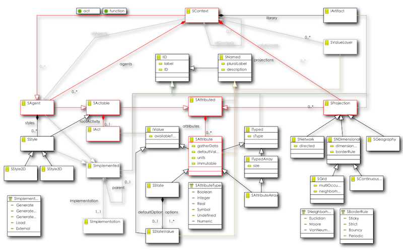
There seems to be a lot going on here, but the basic components are pretty straightforward as we can see in the next diagram.

Core interactions are in Red. The meta-model structure is essentially a Composite pattern.
-
Every model has at its root a Context (Scape). Contexts are Agents that are capable of containing other Agents (including other contexts, naturally).
-
(Meta-level) Contexts contain (meta-level) Agents at the model (design-time) level. At runtime, (model-level) Context instances defined in a (meta-level) SContext will contain (model-level) agent instances of the defined (meta-level) SAgent. This sounds more complicated than it is, so let's look at a simple example. Suppose we create a new Context, and give it a label of "Wiki Example". Within that Context, we create an Agent and give it a label of "Individual" and another Agent with the label "Block". At runtime when we are actually executing the model we will have one WikiExample model instance which contains a number of Individuals.
-
Agents contain Attributes, such as Vision and Age. Context attributes often represent input parameters for contained agents. For example, our Wiki Agent Context might contain an Individual Count as well as a Minimum Age and Maximum Age.
-
Contexts can contain Projections (Spaces), which represent some kind of spatial or structural interaction space for the agents; either a grid, a continuous (euclidean) space, or a network (graph) or geographic space of some kind. For example, we might want to have a City that contains Blocks and that an Individual can move around within.
-
Agents are Actable and thus can contain any number of behaviors called "Actions", described in detail in the next section. Actions can describe individual behavior, and at the Context (Scape) level can define how member Agents and Projections are created.
-
Styles provide a mechanism for defining generic visualization behavior for Agents and so are also Actable. For example, an Agent might have an Action that says effectively "draw a red circle shaded red for the wealth of the agent".
Actions are the most important part of an agent model. While Agents, Attributes and Spaces define what we're modeling, it is Actions that give the models life.
Actions allow the definition of behavior for agents at a very high level. You can think of actions as being analogous to methods in a traditional object-oriented model but that analogy only goes so far. In the same way that methods are defined as part of objects, actions belong to particular agents. (Though even more expressive ways of defining actions are contemplated in future releases.) In the next section we go into detail about what Actions are and how they can be used to define all agent behavior. They are also conceptually more challenging as unlike with structure they have no direct analogies to past agent representations.
An action provides simple, well-defined details that a model can use to determine what steps to take in model execution. That definition seems general enough to be almost useless, but its important to understand that an action is not equivalent to an instruction, a method or a query. In fact, actions can have aspects of all of these. But an action is not in itself an instruction specifying exactly how the modeling engine should do something -- instead an action represents what the modeler intends for the agents to do. (Technically, we might say that Actions takes a "declarative" approach instead of an 'imperative' approach, but that's not quite true, because actions do allow us to define behavior in a richer way than most declarative approaches, and many action constructs map directly to imperative approaches.)
Actions are connected together in a series of sources and targets. (Technically, an acyclic directed graph.) In an abstract sense that is similar to the way any programming language is defined although that structure isn't usually obvious because of the constraints of textual representations. But unlike a typical programming language, in Actions it is not the execution thread (the processor) that moves from one instruction to the next, but the result of the previous action. In this way, action results "flow" from the output of one action into the next action.
Why are these distinctions between traditional Object-Oriented and the Action approaches important? They give us the advantages of simplicity, clarity and flexibility that data-flow approaches like spreadsheets and some query languages have, but with less restrictions. At the same time, they can bring us much of the power and expressiveness of functional languages like Lisp or logical languages like Prolog, but without the level of complexity and obscurity that such languages can have.
We can get a better idea for how Actions work by thinking about how a spreadsheet works. In a spreadsheet, we might define a cell A that adds up a row of data, say "Income". We might define another cell C ("Profit") that takes A and adds it to another cell B that adds up another row of data ("Expenses"). Now, if we change a value in any of the rows, all of the other rows are added up and we get the results in A and B updated automatically. We never had to write code that said something like "for each cell in row X, where...". In fact, we don't really care how our Spreadsheet program adds up the numbers -- it could have added them all up at once but in backward order, or stored a running total somewhere and updated just the difference in value for the cell we changed -- what we care about is what the result is, and whether it is correct.
But Actions are much more powerful than a spreadsheet, because what is flowing from Action A to Action B is not just a number, but any model component such as a space or a set of agents that we need to use in target actions.
In this section, we'll describe how modelers can assemble actions into sets of behavior that accomplish complex tasks on interrelated agents and spaces over time.
| Before getting into the details of how each Actions work together, or the various kinds of Actions, it will be helpful to take a broad overview of how they all fit together. As discussed above, actions are strung together in a sequence or flow. They're always composed of two parts, though those parts can be assembled and intermixed in many different ways. First, we search for a collection of agents, and then we do something with that selection. We refer to these two parts as Selections and Commands. (For the technically minded, another useful way of looking at the Actions approach is as a Query Transformation language, as with SQL and Stored Procedures. Except again, the results of the queries along with the transformations flow through from one query to the next.) Selections find the agents we want to do something with, and the commands do it. We need some way to start the whole chain of actions off, and so we have a kind of Selection called a Root Selection, or simply a Root. Secondly, we need some way to actually make the agents exist in the model in the first place, so we have a Create Agents action. Finally, we have special commands called builders that allow us to create the spaces that the agents will occupy. The various actions are discussed in depth in the Details section. |
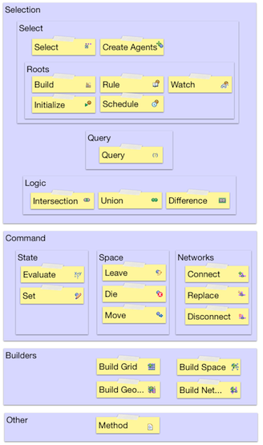 |
First, let's look at how actions define the basic path that agents take during a model run. As with any programming language, the path we take through the program specification is what determines our state when we get there. In a pure object oriented program, the path just defines the control flow -- what we are doing. The actual state of our model is defined within the object itself. If we call a method B from another method A, we'll be relying on method A to set the values that we need into the object state itself. In a purely functional program the path defines how we are going to deal with whatever has been explicitly passed in to a function that has been called, that is the function parameters. In fact, most languages such as Java combine aspects of both approaches.
In Actions, the path itself implicitly carries all of the context of prior execution with it. This means that we don't have to worry about storing context in the object -- as we would in an object-oriented language -- or passing the correct values from one method call to the next as we would in a functional language. Instead, Actions can use the implicit context of the path of flow to determine what the current state of execution is. An important aspect of the Actions design is that loop structures are not allowed -- that is, flows are acyclic. An action can never have an ancestor target (that is targets, targets of targets, etc..) that has as one of its ancestors that same action. As you'll see, actions don't typically need loop structures. By far the most common use of loops in conventional programming langauges is to loop through collections of objects. As selections (see below) refer to the entire collection of agents, any actions on a selection apply to all members of that collection. Recursive structures are needed for some particular usages and will be supported in future releases, but not through an explicit looping construct.
| Again, behaviors in Actions are always defined by a set of selections and queries. In the diagram to the right, we can see the pattern. First, we define a Root Selection for a Rule, Schedule or other triggering event. Then, we might add a series of Query and Logic Actions to define the specific agents that we are interested in. These are all part of the Selection. Next, we might define a series of Commands to determine what to do with those agents. Or, we could use the result of that selection to immediately define another selection, for example if we are searching for an agent that is near another agent. |
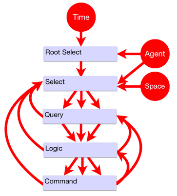 |
| The diagram to the right depicts a simple example. Here, we create a rule, and then check the results of two queries. For any agents that meet those criteria, we'll evaluate some function based on their state, and then set some value on them. |
 |
| In this next example, we'll first create the rule, and then create a new selection with a set of criteria. Finally, we'll do a move based on those queries. |
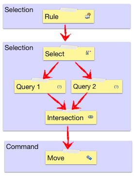 |
In the following example, we've defined a set of actions and their relationships. We have a selection, a few queries and a couple of logic operators leading to a Set Action. We'll describe in detail below how Logic Actions are used in conjunction with other actions to assemble any kind of query structure needed. But for now, we'll focus on the control flow itself.

As you have probably already guessed, the agents that have the Set Action applied to them could take one of two paths through the Action flow. Readers with experience with programming or formal logic will note that this looks just like a parse tree, and while that's basically what it is, there are important differences. For example, if we looked at the following structure as a definition of control flow for a single agent we'd take them to be equivalent. Both would evaluate the statement (Query 1 AND Query 2) OR Query 3 for each agent.
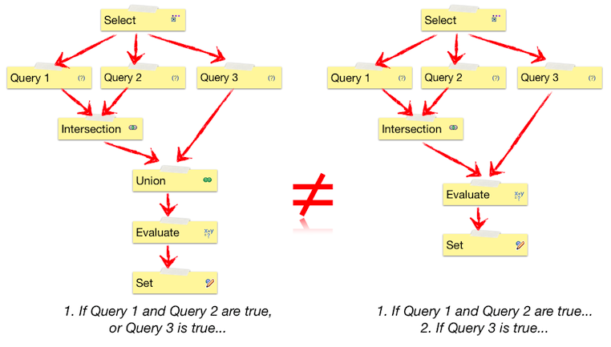
Within Actions in many cases these two approaches will also act equivalently. If we are simply setting a value, it doesn't matter how an agent gets to that Set Action, as long as it gets there. All sources that flow into a given target Action act like a logical union since any of the paths might reach that target. But note that we have two flows moving in parallel in the flow on the right. What happens when the conditions for both branches are true? As the set of agents flow through each branch the Set Action on the left will be evaluated once, while the one on the right will be evaluated twice. Again, this often ends up with the same behavior, but not always. If for example, the evaluate Action uses the value of the attribute that we are setting as input, we can get different results. Of course, you can write code in any language that accomplishes the same thing, but the code will look quite different. For example, if we wrote the same basic logic in Java, in the first case we'd have something like:
if ((query1.evaluate() && query2.evaluate()) || query3.evaluate()) {
doSomething();
}
In the second we'd have:
if (query1.evaluate() && query2.evaluate()) {
doSomething();
}
if (query3.evaluate()) {
doSomething();
}
This is a simple example, but with multiple branches such code design issues can quickly grow complex. The flow approach allows us to express things in a way that is often more natural and expressive. The important thing to keep in mind when desiging action flows is to see the flow as representing a selection of agents moving through streams independently. In the Actions example we expressed both approaches in nearly the same way, except in the case on the left we used a Union Action to bring the two branches of flow back together.
Selections are a key concept in Actions. Put simply, selections define what we are searching for and where. They are defined by a combination of Select, Query and Logic Actions. Each time we create a new Select Action, we define a new selection. Queries can be used to further refine selections either immediately after or later in the Action flow, as described in the next section. Logic Actions are used to combine and organize the Action flow defined by Query Actions. In order to understand how these three pieces work together, we need to understand the idea of selection boundaries.
| A selection boundary determines the set of selection actions that are used to determine what agents to apply target actions to. For example, in the following diagram, we can see the extent of the boundary for a straightforward selection. |
 |
| Each time we create a new selection, we define a new set of boundaries. In the diagram to the right, Selection 1 and Selection 2 eaach start with a new Select Action. |
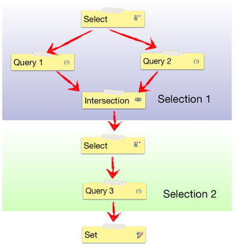 |
But boundaries can be defined for a group of actions by a Query Actions as well. This is because Query Actions can be directly part of a selection definition, but they can also refine selections. We'll see how that works below. So where does one selection boundary end and the next one begin? The simple rule is that the end of the boundary is defined for a given Action by the place where:
-
A Query Action is not followed by a Logic Action, or
-
A Logic Action is not followed by another Logic Action
| In other words, as soon as a Logic Action occurs in a path leading to an Action, any following Query will define a new boundary, as shown in the example to the right. |
 |
Note that we refer to "Selection 1" and Selection 1A". This is because Selection 1A is a refinement of Selection 1 along its particular path of flow. When a query appears for the same selection but past a particular boundary, you can think of it as a sort of filter on the selection contents. We don't have a "Selection 2" here because any Actions that refer to "Selection 1" along the current path of flow will be acting on the selection defined by Selection 1 and Selection 1A.
These rules allow actions to be defined in the simplest possible way, but it is important to understand their implication as they result in behavior that can be different from what someone used to and imperative programming environment such as Java might expect. In a simple case the distinction might not matter. For example, if we are using a Query 1 to test whether an agent's attribute a == x and attribute b == y, we would get the same outcome if we placed intersected the queries as if we simply put them in sequence. Internally we would actually be searching for agents with a == x, and then taking those agents and choosing those agents with b==y, but the outcome would be the same. But consider a more sophisticated case, where we are searching for neighboring available cells.
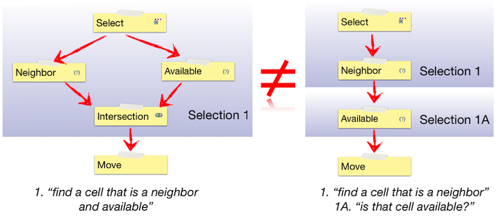
In the first case, we execute a search for all agents that meet the two criteria. This means that if there are any neighboring cells which are available, we're guaranteed to find one (random) cell. In the second case, we first search for all cells that are neighbors. This will match any agents that include both available and non available agents. Now, at this point since our search returns one agent (in the current AMF design -- richer behavior will be supported in the future) the randomly selected agent could be either available or not. So in the second case, we might end up with no cell to move to, and thus make no move at all. This then becomes an important aspect of model design. For example, if one were defining a model where neighbors played a game with each other, one might want to instruct agents to play the game only with neighbors that have a certain wealth threshold. In the real-world situation that we are modeling, we might simply search for neighbors who are over a given wealth threshold and then play the game with them. This would imply that information about other agent's wealth is open knowledge. Or, we might simply select a random neighbor, and ask that neighbor to play a game with us. Upon discovering that our neighbor does not meet our wealth criteria, we would then choose not to play with them. Here we are modeling a cost in time to obtain information about another agent's wealth, because we might miss an opportunity to play the game with another agent on that round.
| Now, let's put the concepts of Actions sequences and boundaries together to see how we can easily define complex interactions between multiple selections. When we define a Select, the state of its selection flows through and with any subsequent selections. So for example, if we have a Root Action rule, and then do a selection based on it, we'll have access to the agent from the original context as well as all of the subsequent selections. We can refer to any previous selection for any subsequent action. For example, instead of setting the value for the rule agent, we might instead set a value for an agent we've found in a target selection. |
 |
| Inputs to functions also use selections. (We'll discuss more details in the functions section.) In the following example, we're adding the wealth of the Selection 1 agent to the wealth of the Selection 2 agent and using that value to set some other value. (Here, perhaps we are modeling an agent in a winner takes all game, in which case we'd also add a Set Action on Selection 2 and set the second agent's wealth to 0.) |
 |
| But we can also use selections in defining Query Actions themselves. So in the following example, we select a neighbor agent and then compare the age of our Rule agent with the age of the Selection 2 agent. If and only if those ages are the same will we execute the target Set Action. This example also demonstrates why we refer to the data flow as weaving. Query Actions can be used to refine selections at any point in the data flow. Selections and their uses are interwoven throughout an action sequence. |
 |
| Finally, we can put all of these concepts together by weaving selections together with flows. As we discussed in the flow section, if we use multiple paths in the Query, the agents that flow through from any prior Query can follow multiple paths at once. And as we discussed in the selection section, the selection and its boundaries determine what agents we will be working with at any given evaluation point in the flow. Consider the example to the right. As we'll see in the detailed explanation of each Action below, Transformation Actions such as Move or Connect take multiple selections. The first selection defines the set of agents that will be performing the action. In the case of a Move agent, this refers to the mover. The second selection, which for Move we call "destination", refers to the selection that will be receiving the action. In the case of movement this is the agent or location that the Rule agent will be moving to. If we follow the flows through, we can note two important outcomes of our model design -- a Rule agent might move twice if it meets the criteria for both the blue path and the red path and that it might move to a different location each time. |
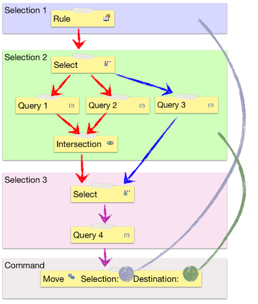 |
| In this section, we'll dig into the specific role of each of the Actions. From the design discussion we hopefully have some sense of how these all fit together in general. Again, the block diagram to the right provides an overview of how the various actions are related. You might want to take a look at the meta-class diagrams in the referernce section as well. |
|
A selection defines a particular set of agents that we want to do something with. Selections are made up of the Select action itself, along with Query and Logic actions. When we refer to a selection in any target command, we are referring to the selection in the context of where we have defined the behavior.
As we discussed above, when we refer to a Select, we're actually referring to the selection as a whole leading up to the current action. The Select Action itself is used to define what we are searching for (Agent), where we are searching for it (Space), and from whose perspective we are doing it (Selection). Create Actions are a sepecial kind of Select Action that are used to create agents. See the decription in the Builders section below for more information.
The selection that we are searching "from". This seems to be the concept that new users have the most difficulty with, but it is key to understanding how Actions works. Just as with any other Action -- a Move command for example -- a selection needs to know what set of agents that it is working with. For example, if we want to define a selection B that finds the cells neighboring a rule B's agent, we would set selection B's selection to A.
Here we define what agent we will be looking for. In order for this to make sense, the agent has to be related in some meaningful way to the agent whose behavior we are defining. For example, it might be a partner agent or a location that we might want to move to. An agent must be specified unless we are searching within a continuous space, in which case this value should be empty, and the result of the selection will represent some location in that space. In the current version of the framework, we treat destination cell locations as agents, and require that location to be specified as a target agent, but in a future version we'll allow searches without defining an agent within grid spaces as well.
The space that we want to search within. Of course, this must be specified if we use any spatial query terms (see below), but if we simply want to search across all agents it should not be specified.
Represent Queries (Controls) on agents and Transformations, or Commands, on the result of those queries. Queries, Transformations and other in which each child target carries the execution and data context for it's particular path.
A Query represents a concrete criteria for our search. The name is a bit confusing because of potential for confusion with a generic query. Queries -- along with their cousin Evaluators -- define a function that is evaluated and that can take Agent attributes and the results of other Actions as input. Queries are combined with each other and with the logic actions to determine the results of a selection for their direct target actions.
As with all other actions, evaluations specify a selection, and just as with the other actions, this determines the set of agents that the evaluation occurs for, but the input selections determine what agent is used for the calculation itself.
A query function is evaluated to determine the results of a particular selection. Functions can represent very simple search criteria such as "My Age == Your Age", but they can also represent complex and inter-related concepts such as spatial relationships. They must return logical values. See the functions section for more information on specific functions.
The set of values that will be used to determine the result, in the order specified by the function prototype. Inputs can specify any source evaluation and any agent state or agent parent context state. They can also be literal values -- see the section on literals below. The selection determines which agent's will be used to determine the value, and different inputs can specify different selections.
These Actions provide us with the ability to combine queries with one another, and follow the basic rules of set logic. But as we've seen above, it is important to understand that there are important differences between Logic Actions and typical programming logic. Most importantly, they apply not to individual agents per se, but to the set of agents that move through them. Also, there is not neccesarily short circuit execution (it's not needed) and much richer criteria can be joined together because of the action flow design.
An intersection contains only those agents that match all of its source actions. This is essentially equivalent to a logical AND statement and has similarities to an && operator in a java "if" statement. An agent must be able to flow through all incoming actions in order to flow out of an Intersection Action.
A union contains all agents that match any of its source actions. This shares similiarities to a logical OR statement and the || operator in a java "if" statement. It does mroe than that however, as it acts to join multiple flows of action. That is, as set logic implies, an agent will never appear in the result of a union more than once.
A difference contains all agents that do not match any of its source actions. This essentially equivalent to a logical NOT statement, and has similarities to the Java else statement. Like the Union Action, difference implies that a given agent will only appear once in any subsequent targets. No agents that reach a Difference Action will flow through to the next action(s), and all agents (that meet the definition of the Select Action) that cannot reach that action will.
Root actions are a special case of a selection. These represent behaviors that are defined for all members of agents; these are the highest granularity of an agent's behavior, such as "Find Partners" or "Eat" or "Reproduce". When you want to create a new set of Actions, you have the following choices.
The Build Action is a specialized action that allow the construction of member agents and spaces within a parent context. A Build Action executes once for each context before any initialization actions occur for any children agents of that context. Currently it is undefined whether a context's own Initialize Action is executed before the Build Action occurs, so implementors should not rely on any initialized values being available at build time.
An Initialize action is executed once and only once for every agent when the model is first started -- at time 0. Initialize Actions are guaranteed to execute before any other non-builder action occurs.
A Rule executes once for every agent for every iteration of the model. An important note is that the actual sequence of rules is technically undefined. An implementor should not rely on the fact that a rule occurs before another rule in the list of agent actions though typically the order in which the rules were actually created is respected.
A schedule is executed on a recurring basis, according to the values detailed below. Note that schedules are often overused. In most agent-based models it makes sense to have any behaviors occur at the same granularity using a Rule. Please note that Schedules are not currently supported in the Escap target, but that support should be available soon. In the following descriptions we refer to period as the current iteration of the model, that is where time == t.
The period that the schedule will first be invoked. For example, if this value is 100, and interval is 1, the schedue will be executed at times 100,101,102..
How often the schedule is invoked. For example, if this value is 3 and start is 1, the schedule will be executed at times 1,4,7..
Where the rule will be placed in the execution queue for a given time period. For example, if Schedule A's priority is set to 3 and Schedule B's is set to 2, Schedule B will be executed for all agents before Schedule B is executed for any agents.
A Watch action is executed any time the watched value is set for any agent. Note that the Action will be triggerred even if the state is simply set back to the value that it already has. It is important to be careful about creating Watches that might set the values of other Watch actions which might in turn trigger this watch. To clarify, if a modeler creates a Watch A for attribute a, and creates a target Set for it for attribute b, and Watch B is watching attribute b, then if Watch B has a target Set for attribute A, a circular execution could occur. This would cause the model to get stuck in its current iteration. To help model developers avoid this case, a warning will be provided if such a set of circular watch dependencies is created.
Builders are a special category of actions that are used to create spaces. They should not be confused with the Build Action itself which is a root selection that defines the time at which builder actions should occur. Generally speaking, specific Builder Actions for spaces and Create Actions for agents are targets of Build Actions.
Agents are crete using the Create Agent action. The Create Agent Action is actually a special kind of Select Action that is used to actually create agents rather than simply search for them. Other than this capability, a Create Agent action can be used just like any other action except that Query and Logic actions aren't needed or genrally appropriate as this action defines a set number of agents to perform an action against. Create Agent actions have the special feature of being usable from the containing context, so that contexts can create initial agent populations before any agents exist within the context to perform actions against. But they can also be used directly within agent rules, for example to create a child agent as the result of a reproducation rule. Note that Initialize Actions are not performed on agents that have been created within a model during regular (non-initialization time) execution. If the model creates actions during the regular model run, any state initialization should be handled by the targets of this action directly. (Naturally, if the enclosing context is used to create agents at the beginning of a model run, then the Initialize action is used as part of the normal model life-cycle.)
The selection to use as the basic for this selection. This is generally not important except to define control flow.
Not generally relevant for agent actions, as agents are not placed into a space unless explicitly moved to that space. Potential associations between agents and spaces are defined by the space building actions.
The number of agents to create. If used as part of an enclosing context's Initialize Action(s) an Attribute parameter will automatically be created. If not, then an evaluation or agent attribute should be used to define this number.
Creates an agent that has a particular shape extent within some continuous (i.e. vector as opposed to raster) space. This action performs just like a Create Action except for the following attribute:
Determines how each agent's spatial extent will be defined. The actual form of that shape is implementation specific. For example, in a GIS space (the immediate rationale for this Action) a polygon represents a region on a map and the extent of that shape might be determined by a .shape file. The available shape types are:
- Point
-
A simple point in space, fully equivalent to a standard continuous space location.
- Line
-
A single line within a continuous space. Technically this represents a line segment as it is expected to have a beginning and ending point. In the future, this might refer more generically to planes in three dimensional space and hypersurfaces in n-dimensional spaces, but this is currently not supported by any AMF target implementations.
- Polygon
-
A region within a space defined by an arbitrarily large set of line segments. Potentially this could be used to refer to polyhedrons in three-dimeensional space, or even more genrally as polytopes, but this is currently not supported by any AMF target implementations.
Imports and creates a set of agents from some input file. The actual form and manner of the import is implementation specific but should be inferrable from any source file based on the URL provided, assuming that the target platform or the AMF platform supports the appropriate imput type. For example, a Tab-CR delimited file might be used to populate a set of agents with various attributes. Additional meta-data could be provided by the URL, but we will likely add additional extensible meta-data to this action to better support the definition of expected input types and routines from within an AMF model itself. This action is equivalent to the Create Agents action except for:
Combines the properties of the Create Shaped Agent and Load Agent Actions. The source url should of course specify an input format that supports the shape type specified. See the descriptions of the related actions for more details.
Creates a network, i.e. a graph structure, supporting the establishment of edges between arbitrary nodes.
Specifies the set of agents that can exist within this network. Agents must be included here in order for them to make connections within the network but agents included here are not required to have connections within the network, nor are such connections created for them. (See important note regarding network types below.)
Deprecated. This feature is only currently supported for Repast targets and is likely to be removed from future versions of the AMF meta-model. Future AMF implementations are likely will provide a different mechanism for instantiating and importing network structures either within the network defintion or through other Action definitions. Instead of using this feature, modelers should create specific networks by building them up with Connect Actions for indivdual agents. For example to create a small world netowrk, a modeler might create random links between agents and then replace or augment those connections.
Creates a grid space.
The set of agents that might exist as occupants of this grid; that is, members of individual cells within a given grid. Agents must be included here in order for instances to exist within the space, but agents included here do not actually have to exist within the space. (In the Repast implementation, all agents technically are memebers of the spatial projection, but are not required to have valid coordinates within that space.) For example, in an agriculture model these might represent agents moving about and harvesting plots of land.
The agent that will be used to populate the grid itself. A gird is guranteed to contain one and only one fill agent within each grid locaiton. The grid will be populated with instances of the specified agent and these agents cannot move, leave or die within this space. This value need not be specified -- if left blank a default cell without any state will be used. For example, in an agriculture model, this agent might represent a single plot of land.
Creates a continous space. The actual dimensionality and other qualities of the space are currently defined in the space itself though this might change in future versions. All other values are used in the same way as for the gird and other builder actions.
The set of agents that might be a part of this space. Agents must be included here in order for instances to exist within the space, but agents included here do not actually have to exist within the space. (In the Repast implementation, all agents technically are memebers of the spatial projection, but are not required to have valid coordinates within that space.)
Constructs a geographical space. All details of this space are specfied by the implementation, i.e. a specific geographical imported space. Generally these would be defined by a Create Agents action; that is a set of imported agents representing US states would also represent the overall space of interest.
Evaluate Actions define some calculation on a function based on the model state and a set of input(s). The inputs that an Evaluate Action can take is determined by its functions and can be either agent attributes, prior evaluations or literals. The result is then determined based on those inputs. In some cases Evaluate functions can be used to determine some action indirectly, such as with a graphics fill, but they can never be used to directly change model state.
As with all other actions, evaluations specify a selection, and just as with the other actions, this determines the set of agents that the evaluation occurs for, but the input selections determine what agent is used for the calculation itself.
A with queries, a function is evaluated against its input set. Functions can represent simple operators as well as complex functions. See the functions section for more information on specific functions.
The set of values that will be used to determine the result, in the order of the function prototype. Inputs can specify any source evaluation and any agent state or agent parent context state. They can also be literal values -- see the discussion in the Tools section. The selection determines which agent's will be used to determine the value, and different inputs can specify different selections.
The Set Action assigns some value to another value.
Here the selection refers to the agent that we want to change. This does not have to be the immediatily preceeding selection but can be any accessible selection.
The attribute to modify. It must be a member of this action's agent or of that agent's parent context.
The Move Action causes an agent to change its location in some space or network. The agent will leave whatever location it was in before within the selection space, and move to its new destination.
As in any other action, the selection determines what agent is affected -- in this case the agent that is being moved.
Causes the agent to leave a particular space.
The selection determines what agent will be leaving and what space the agent will be leaving. If the agent doesn't exist in that space nothing will happen.
Causes the agent to cease to exist within the model as a whole.
Connects two agents within a network space. This Action is not applicable for any other kinds of spaces. Note that unlike with other transformational commands, we do not use the destination space to determine the space that will be impacted by the Action. This provides a more efficient representation without any loss in generality, because it allows us to search for a source and target agent within other spaces and then create a connection without creating a separate selection. As the important structural feature of networks are the relationships themselves, not the nodes this provides a more direct way to specify these relationships.
The selection determines the agent that will be connected to another agent. In the case of a directed graph, this is the source node.
The destination determines the agent that the selection agent will be connected to. In the case of a directed graph, this is the target node.
Determines whether the connection made is directed or not. If true, selections from source agents will include the target, but target agent selections will not include the source agents (unless they are connected through some other path).
Removes the connection between agents within a network space. See the description of the Connect Action for important details.
The selection determines one other side of the agent relationship that will be disconnected.
Functions in the same way as a Connect Action excepth that all other connections to other agents will first be removed.
The selection determines the agent that will be connected to another agent. In the case of a directed graph, this is the source node.
The destination determines the agent that the selection agent will be connected to. In the case of a directed graph, this is the target node.
The Method action supports inclusion of arbitrary code within a generated method. Generally, this will be Java code as all of the current target platforms are Java-based but there is no technical requirement that it must be. For example, if a target has been developed to produce code for Swarm running on an iPad (and no, there are no current plans to support such a thing, though it would certainly be cool!) then the modeler could define Objective C code for the method.
Please note that the Method Action should be avoided whenever possible. You should consider using it only in the case where there doesn't appear to be a way to construct equivalent functionality using the native Actions framework, such as when interfacing with third party APIs. The aim of Actions is to provide the most general support for Agent Modeling possible without compromising the core design. Any use of native Java code strongly limits the set of platforms that your model will be able to generate code for and prevents you from using the AMF edit tools to explore the model behavior. In the case where you wish to construct a model feature and believe that it isn't possible or practical to do it with Actions, please contact us (see support section) so that we can suggest how you can accomplish what you want within Actions. If that is not possible, we'll consider developing new features that will support what you want to do.
On the other hand, you may simply wish to use the Agent Modeling Framework to build a scaffolding for your model -- perhaps using your own custom Java framework for example -- and Method would be a good way to accomplish that. Also, note there are a number of other approaches to mixing hand-crafted Java together with AMF generated code. Please see the Programmer's Guide section "Integrating Java and AMF Models" for more on that.
If you do decide to use the Method Action, keep in mind the following design practice recommendations:
-
Keep your usage of external API references to a minimum. If you can use only code provied by the core Java classes as well as the Apache Collections library, your code should work on every current Java target. On the other hand, if you make use of a specific ABM platform APIs your code will obviously only compile and run against that target.
-
Code should be in the form of a method body, excluding the signature. A single Java method is created using this code body. There is no support for input parameters -- if you need access to evaluated values from source actions, create agent attributes for them, set their values for the selected agents, and use them as sources for your Method Action.
-
All Java class references should be fully qualified. For example, if you wish to use the eclipse Draw2D Graphics class, you should refer to "org.eclipse.draw2d.Graphics", not simply "Graphics". If classes are not fully qualified, you will recieve compile errors. You can usually easily fix these by selecting your source code directory and choosing Source > Organize Imports.. but it prevents automatic code generation.
-
The method interface has no support for code completion, syntax checking or other common Java development environment features. You can avoid code maintenance and even support targetting multiple APIs by using the following technique. From your method body, call a helper method in a seperate class. The referred class could use a static method call, or you could instantiate the class and call a method against it, passing in the agent class so that the helper class can reference the agent's state. For example, if you wanted to use some custom java code to import agents from a specialized input file, you could put the following code in the Method Action body for the root Context:
(new org.me.SpecialFileLoader()).load(this);
Then create a new source directory in your project called "src" ( New > Source Folder...) and create the class for the specialized file loader including the following method:
public void load(MyRootModel model) {...}
This approach allows you to a) maintain the working code using the Java Development Environment, b) avoid changes to the Method Action within the model, and most importantly, c) allow other implementations of the code using multiple APIs. For example, if you need to create a specialized graphics routine, you could create seperate implementations for your Escape (Eclipse Draw 2D), Ascape (Java Swing), and Repast (Simphony API) and place them in the appropriate projects. As long as the different Java source files have the same names and signatures, they will all compile correctly and execute the appropriate behavior.
The selection determines what Agent class the code will be created within and the set of agents the method will be called upon.
The actual code to insert in the method body. See the detailed recommendations for code use above.
Query and Evaluation Actions are both "Sinks" which means that they are capable of containing inputs. When you select a function, the appropriate number of inputs will be created. After selecting a function, you can view and select the inputs. The choices for the inputs will be constrained by the type of the function and the other operands you've selected.
Inputs can take literal values; that is values that you specify simply by entering them directly into the query. In general it is useful to think of literals as similar to local variables in a conventional programming language, whereas attributes are analogous to member variables. (And this is how they are represented in the generated Java code.) As with local variables in model code, literals are not recommended for any values that can change model behavior. The value cannot be easily accessed or changed by other model users. For greater transparency, you should instead create an Attribute with an appropriate default value, setting the "immutable" value to true. Still, literals can be useful for values that are special cases related to the evaluation or query, such as an input code, and for quickly prototyping functionality.
In this section, we'll look at an example that should make clear how the basic Actions approach works in a model. Say we want to define a behavior like:
"Search for a random agent within my vision that is the same age as I am. Find a location next to that agent that is not already occupied and move to it."
Here, we create a sequence of actions like so:
-
Select every agent for every period of the model. ("Find Partner" Rule)
-
For every member of that selection, search for other agents of the same age within vision distance. ("Partner" selection.)
-
From "Partners" find a random member and search for a neighboring locations. ("Partner Neighbor" selection.)
-
Finally, move the agent in "Find Partner" to the "Partner Neighbor" location.
Now, notice that although it's convenient to speak as if there is only one "Find Partner" and one "Partner Neighbor" in step 4 above, in fact selections are flowing through for each of the results of each of the previous action sequences, and we can refer to each of the directly. We could represent these behaviors in many different ways. For example, we might want to specify the model in a (hand-drawn) graphical language or in a (made-up) textual language:

This is how it looks in an actual model:
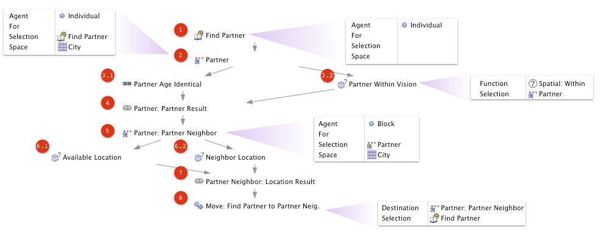
And here is how this works in detail:
-
Create a Rule that will trigger the behavior. In this case, we want this rule to apply to all "Individual" agents within the model. (Space isn't relevant in this case.
-
Create a child Select Action that will find our partner. Two important things to note here:
-
The selection occurs based on the "Find Partner" selection. This means that for each Individual in the model, we'll be searching from the point of view of that agent to some other selection of agents.
-
We also need to define what type of agent we want and in this case the space does matter. We want to find an agent that is nearby within the City space. If instead we wanted to find a partner in a social network, we'd specify that instead.
-
-
Create two child Query Actions:
-
We want to search for someone who is the same age as us. This highlights the importance of the idea of the Selection in the Actions design. We're qualifying Age by the rule agent's partner for the first input and by the rule agent for the second. The selection carries throughout the flow of execution and this context is an explicit part of the entire structure. Note that this is very different from the way control flow works in a traditional imperative language such as Java.
-
We also want to search using a function for nearness, "within", which takes a parameter of vision. Note that the spatial functions are all polymorphic -- if we decided later on that we would rather search within say "Kevin Bacon space", that is a graph structure representation of space, we would only need to change the space we've defined in Select Partner.
-
-
Intersect the results of these two query components. This delineates the end of the selection definition for any target Actions.
-
Select a neighbor. Again, we can see the importance of Selections. Here, we are selecting from the point of view of the partner, not the initial agent that the current Rule is being executed for. Note that this time our target agent is a "Block", that is, a location within the city.
-
As above, define some queries. This time we want only those agents that are:
-
available, and
-
neighbors of our partner.
-
-
And another intersection..
-
Finally, we move to the location we've found. All that's required at this point is to specify:
-
The movement selection, or those agents that are moving, which in this case is the original agent we're executing the rule for, and
-
The destination, which is the cell that we've found. Note that the framework infers from the space definition that the Block agent is capable of hosting the Individual.
-
The following diagram may be helpful to readers familiar with UML and Meta-modeling:

In the diagram above, all meta-objects except for Input, Literal, and the enumerators (lists of options) are Actions. Blue meta-classes are concrete (you can create and use them directly). Red meta-classes are key collaborations.
-
An Act is anything that might happen during the execution of an Agent-Based Model.
-
All Actions have as their root-most source action a Root. These are added first to any agent behavior and act as triggers for all target behavior. For example, a Watch will execute any time the watched attribute is modified. (As the diagrams do not refer to elements outside of the current package, we cannot see here that Accessor includes a reference to some Attribute, but it does. To see these kinds of relationships you will want to refer to the metaabm.ecore file itself.)#Actions are targets and sources of one another, but an Act can never have itself as a source. (That is, Actions are acyclic, but branches can re-converge. When we refer to an Act source or target, we typically mean to include all ancestors or descendants, not just the immediately connected Act.)
-
All Actions (except for root Actions) reference a Select, referred to as the "selected" relation. An ASelect represents the model aspects that the Act is working within; that is, the spatial, temporal and type (agent) "world" that is currently being selected.
-
Commands trigger some model state change (Set) or spatial transformation (Transform).
-
Controls determine whether target Actions are executed and against what agents. They are in some sense query terms and include Query actions and Logic Actions.
-
Transforms also specify a "destination" Select. This represents aspects that the selected agent(s) will transform to. For example, a Move may use a Rule to select all SugarAgents (type) in the SugarGrid (space) every period (time) and move them to a destination of a neighboring SugarCell (type) in the SugarGrid (space, with time implicit).
-
Sinks are Actions which use some Function (see next section) to interpret state in the form of Inputs. Inputs can come from selected agent attributes, other Actions, or literal values.
Functions are relatively simple in terms of model design, but we need to understand how particular functions work in order to develop models. Functions are divided in two ways. By type:
-
Operators are simple calculations sharing the same type.
-
Functions that can represent any general function that takes some well-defined input(s) and returns some well-defined output(s).
And by usage:
-
Generics can return any value and are used in Evaluate actions.
-
Logicals return some boolean result and are used by Query actions to decide whether target Actions apply to a particular selection, and by Evaluate actions just as with any other functions. Input types should be defined as generally as possible.
These overlap, so we have operators, logical operators, functions and logical functions. Functions are also divided into categories. We'll go through each of these in depth below.
The most important thing to point out about functions is that - as we've seen with other Acore concepts -- they provide richer sets of functionality than traditional approaches. Many functions are designed to collaborate with one another as we'll see when looking at Spatial and Graphical functions. Functions can also trigger the creation of related model artifacts as we'll see with the Distribution functions.
A technical note: conceptually, functions can return multi-values, but that is not currently implemented in the reference targets because of limitations of the target language Java.
Naturally, the Modeling tools provide general functions for performing calculations, comparisons and more complex mathematical expressions. The function library can be easily extended, and we'll be adding additional capabilities over time. As always, we welcome feedback and we'd like to hear what functions you need that aren't covered here.
The math functions use the extremely well specified and tested routines form the Java Math library. (Because of copyright restrictions, we aren't able to include the exact definitions here. Click on the links to get more details on each function.)
See JavaDoc: http://java.sun.com/javase/6/docs/api/java/lang/Math.html#iEEEremainder(double,%20double)
See JavaDoc: http://java.sun.com/javase/6/docs/api/java/lang/Math.html#hypotuneuse(double,%20double)
Random functions are especially significant for agent models. Of particular interest are the weighted membership and random state and boolean value functions. You should be familiar with these functions so that you don't have to create more complex Action flows to accomplish the same thing.
Note that we only have support for uniform distributions as of this release. We're working on a collaborative design for evaluations that allow easy mixing and matching of random functions and distributions.
A pseudo-random value within that numeric range specified as drawn from a uniform distribution. The minimum values are inclusive. The maximum values are inclusive for integer inputs and exclusive for Real inputs.
Inputs:
[Numeral] The minimum value (inclusive).
[Numeral] The maximum value (inclusive).
Outputs:
[Numeral] The random number.
A pseudo-random value between zero and the value specified by the (non-zero) input and drawn from a uniform range. That value is inclusive for Integers and exclusive for Reals. (Note that as with the random in range function in the context of real numbers the distinction between an exclusive and inclusive limit is essentially meaningless.)
Inputs:
[Numeral] The maximum value (inclusive).
Outputs:
[Numeral] The result.
A pseudo-random Real value between 0 and 1 drawn from a uniform distribution. (The distinction between inclusive and exclusive range is essentially meaningless in this context and we can assume that the result will never be greater or equal to 1.)
Outputs:
[Real]
An indexed value weighted against a probability distribution. The total probability must sum to 1.0. For example, an input of {.1,.2,.7} under a uniform distribution would would have 10% probability of producing "0" , 20% for "1" and 70% for "2". This function can then be used with Item to return a biased result from another list.
Inputs:
[Real] A list of values that will determine the resulting weighted index.
Outputs:
[Integer] A resulting indexed value bounded by 0 and the length of the input list - 1.
Represents a random value drawn from the set of Real values specified.
Inputs:
[Real] Returns a random member of the supplied list of numbers.
Outputs:
[Generic] The value of the item at a random index.
Spatial functions provide the core functionality for Agent Models. Spatial functions are polymorphic, which basically means that they don't care what space they are operating on as long as that space is suitable for them. Spatial functions are designed to collaborate with one another. For example, by intersecting the "Neighbor", "Available" and "Toward" functions, we can design a rule that causes the agent to move to the next neighboring cell that get's it closer to some target agent. See the function details for more information.
Represents the nearest agents (including gird cells) or locations to this agent. If more than one agent or location is the same distance away they will all be considered. Note that while this function is defined for the selection of an agent, the result of this function is defined by the context within which it is used. If the selection specifies another agent within a space, this function will represent the nearest agent in that space. If the selection specifies a Cell within a grid space, this function will represent that cell.
Represents a location that is on the shortest path to a particular agent or location from the source agent (that is, the selection's selection's agent). This function collaborates with the within and neighbor functions to allow the agent to move in a particular direction towards some objective.
Represents a limit to the distance of a spatial search. When used in combination with other spatial functions such as "nearest" requires that all agents or locations must be within the distance specified by the input value.
Inputs:
[Numeral]
Represents any agents that are nearest neighbors to the agent, that is nominally of distance 1. This function is only relevant in discrete spaces -- grids and networks -- where there are immediate neighboring cells as defined by the geometry of the selection's space.
Specifies whether the agent that we are searching from -- that is, the agent of the selection for this Query Action's selection -- is included in the results of the search.
Represents agents or locations that exist within the boundary specified by the inputs.
Inputs:
[Numeral]
Represents the location of the searching agent. For example, if a selection is defined for an agent cell, and that selection's selection's agent is an occupant of a cell, the cell that the agent is occupying will be used.
Represents cells which are not currently occupied. This function is only relevant for grids which are not multi-occupant.
The distance between the source agent and an agent represented by this selection. If more than one agent is represented by the other functions in the selection, this function will the distance to an arbitrary (randomly selected) agent as defined by those other functions.
Outputs:
[Real]
Represents a location that is on the path that will take the source agent (that is, the selection's selection's agent) the farthest distance from the agent(s) represented by the search. This function collaborates with the within and neighbor functions to allow the agent to move in a particular direction away from some location or agent.
Represents the location of the current agent for use in subsequent selections.
Inputs:
[Real]
[Real]
For examples of how spatial functions can be used within action flows to provide agents with complex movement behaviors, see the Modelers Guide actions examples. In the following example from that section, we define an action that causes a partner agent to move to an available neighboring space.
Graphic functions are combined within Style Evaluate Actions to determine how to draw an agent within a visualization. One nice aspect of this approach is that the same style definition can be used in multiple places without changing any code. For example, the same style could be used to draw an agent on a two-dimensional grid within Escape, a three-dimensional shape within Escape, a Java Swing based visualization in Ascape, and an XML configured visualizaiton in Repast Simphony.
To define a graphic style for an agent, design a flow in which you create Evaluate Actions for color and shape, and then create an Evaluate Action with the graphic fill or outline function as a target of these.
Shrinks the current shape by the input amount. (The overall scale is currently unspecified, but in most implementations should be 20.)
Inputs:
[Integer] Number of nominal pixels to inset.
Draw a marker, that is a graphical indicator that can be used to add an additional cue about the object state. For example, in a two-dimensional graphics representation this might be a small shape drawn inset at the corner of the larger shape.
A color specified by the three inputs for Red, Green and Blue color components. Those inputs are expected to be in the range 0..1.
Inputs:
[Real] A value from 0.0 to 1.0.
[Real] A value from 0.0 to 1.0.
[Real] A value from 0.0 to 1.0.
Draws an outline of the last evaluated shape, using the last specified color or the default color (usually black) if none has been specified.
In the following action flow for the epidemic style, we've create Query Actions to determine each agent's current state, picked a color based on that, and then used a shared target to select a shape for the agent style and fill it:

After saving the model we can execute the two and three dimensional visualizations. Note something really nice -- even the charts have used the colors we've defined!
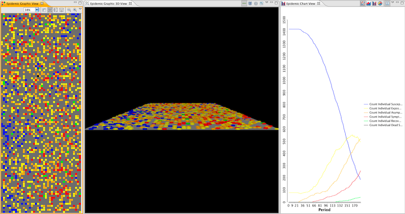
Returns the item at the specified index from the list of items provided. Those items will typically be input primitives such as Integer or Real values.
Inputs:
[Generic]
[Integer]
Outputs:
[Generic]
One of the most common tasks in the Agent Modeling process is the creation of agents with particular states drawn from a distribution. For example, you might want to create a number of agents with wealth randomly distributed between some minimum and maximum values. The distribution functions greatly ease the process of setting up those initializations and their associated parameters.
A random number taken from a distribution of values as defined by a cross of all values. (See Cross Distribution.) This funciton then returns a value drawn from the minimum and maximum values as determined by the current agent state. In the cross distribution, each of the values is treated independently so that an input attribute is created for every potential combination of states.
Inputs:
[Generic] The list of states to factor into the distribution. This is a multi-argument, which means that you can specify any number of attributes as arguments.
[Real] The set of attributes that will determine the minimum value of the function result based on the current state of the agent. Note that this list is automatically created and maintained. These values don't need to be and should not be manually edited.
[Real] The set of attributes that will determine the maximum value of the function result based on the current state of the agent. Note that this list is automatically created and maintained. These values don't need to be and should not be manually edited.
Outputs:
[Real] The resulting random number based on the current agent state and the input parameters.
A random number taken from a distribution of values in which each of the minimum and maximum values are added to determine a total minimum and maximum value. (See Additive Distribution.) In the additive distribution, each of the values is treated as dependent on the others so that an input attribute is only created for each seperate state.
Inputs:
[Generic] The list of states to factor into the distribution. This is a multi-argument, which means that you can specify any number of attributes as arguments.
[Real] The set of attributes that will determine the minimum value of the function result based on the current state of the agent. Note that this list is automatically created and maintained. These values don't need to be and should not be manually edited.
[Real] The set of attributes that will determine the maximum value of the function result based on the current state of the agent. Note that this list is automatically created and maintained. These values don't need to be and should not be manually edited.
Outputs:
[Real] The resulting random number based on the current agent state and the input parameters.
A value taken from a set of (auto-generated) attributes based on the value of each state included. For example, if the multi-values included a state X with values A and B and a state Y with values I and II, this distribution would create separate input attributes for AI, AII, BI and BII. Then for an agent with States A and II this function would return the value specified by the AII input attribute.
Inputs:
[Generic] The list of states to factor into the distribution. This is a multi-argument, which means that you can specify any number of attributes as arguments.
[Real] The set of attributes that when multiplied against each other will determine the value of the function result based on the current state of the agent. Note that this list is automatically created and maintained. These values don't need to be and should not be manually edited.
Outputs:
[Real] The resulting value based on the current agent state and the input parameters.
A value taken from a set of (auto-generated) attributes based on the combined values of the states provided. For example, if the multi-values included a state X with values A and B and a state Y with values I and II, this distribution would create input attributes for A, B, I and II. Those values would then be added together, so that for an Agent with state A and II this function would return A + II.
Inputs:
[Generic] The states to include in the distribution. This is a multi-argument, which means that you can specify any number of attributes as arguments.
[Real] The set of attributes that when combined with each other determine the value of the function result based on the current state of the agent. Note that this list is automatically created and maintained. These values don't need to be and should not be manually edited.
Outputs:
[Real] The resulting value based on the current agent state and the input parameters.
In the following example, we walk through the process of using a distribution functions, demonstrating how we can easily modify the Epidemic model so that instead of simply setting an initial exposed population, we can define factors that take together will determine an individuals initial exposure state. We simply:
-
Create an Evaluate Action called "Initial Status".
-
Set the function to "Cross Distribution"
-
Opened the "Multiple Value" node in the editor, and clicked the "Multiple Values" item within it.
-
Selected the "Status" attribute.
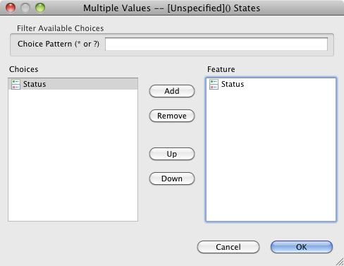
The appropriate attributes are automatically added to the model, as you can see below.
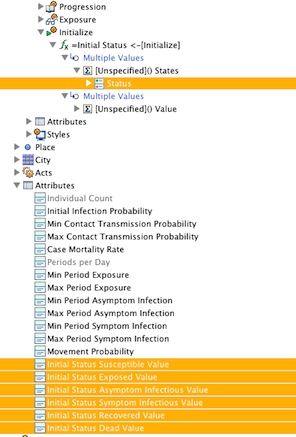
In order to assign these values to the agent, we'd simply need to assign the results of this Evaluate Action to the agent.